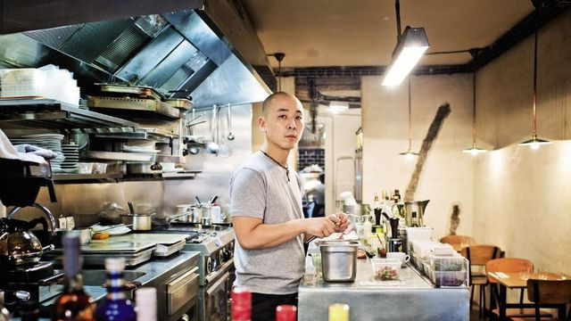
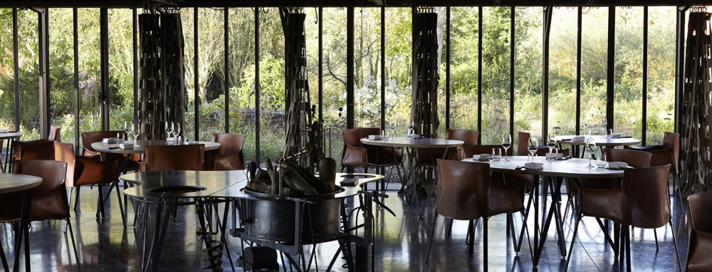
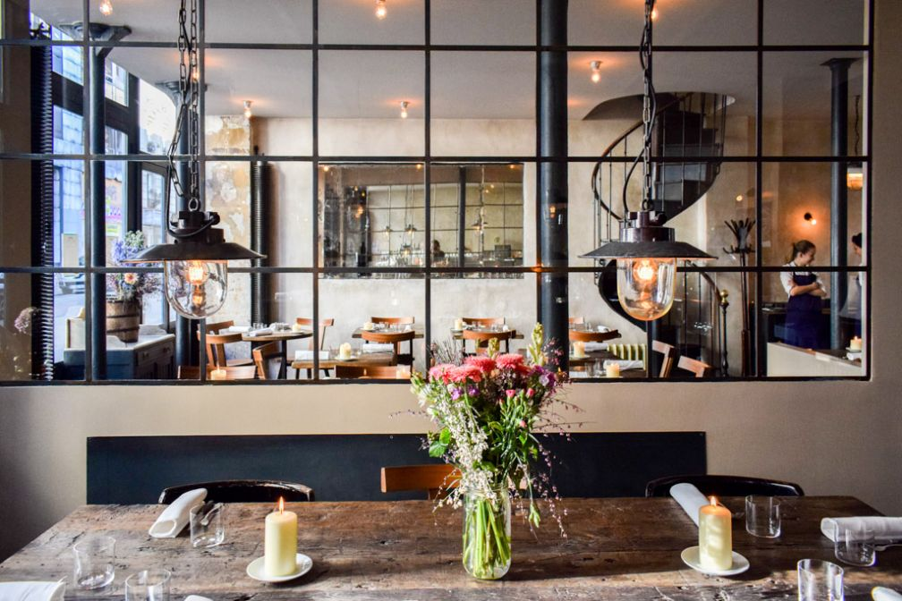

I worked in several start-ups in the food tech industry as commercial / operations manager.
I want to improve my technical skills to be able to communicate more efficiently with the product teams.
|  |
AbriDid you know that the set menu at Abri is never really “set” per se? It’s Katsuaki Okiyama’s specialty: four plates, described to you out loud and with the guarantee that the next table over, who arrived five minutes after you, won’t be eating the same thing! |
|  |
La GrenouillèreRoland Gauthier’s century-old farmhouse buildings have been woken up by the biting embrace of his son Alexandre’s fiery forges… Everything is there, decked out in glass and steel by the architect Patrick Bouchain. |
|  |
SeptimeFirst, the bad news: you’re probably not going to get into Septime. Not unless you’re willing to call exactly three weeks before your desired reservation, and probably not even then. Septime is still the best contemporary tasting menu in Paris. |
This page has been coded during the FullStack program @LeWagon.
That was probably the best experience of my entire life.